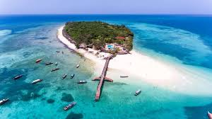

Afrika'nın en yüksek noktası olan Kilimanjaro, doğa ve macera tutkunları için eşsiz bir destinasyondur.
Zirveye ulaşmak için trekking turları oldukça popülerdir.
Dünya'nın en büyük sıcak çölü olan Sahra, deve safarileri ve çöl kampları ile unutulmaz bir deneyim sunar.
Fas, Cezayir ve Tunus gibi ülkelerden ulaşım mümkündür.
Afrika'nın en ünlü safari parklarından biridir. Aslan, fil, zürafa ve daha birçok vahşi hayvanı doğal
ortamlarında gözlemleme fırsatı sunar.
Dünyanın en büyük şelalelerinden biri olan Victoria Şelaleleri, hem doğa harikası olarak büyüleyici
hem de adrenalin dolu aktiviteler için bir merkezdir.
Beyaz kumsalları, turkuaz denizi ve tarihi Stone Town şehri ile tatilcilerin gözdesi bir ada destinasyonudur.
